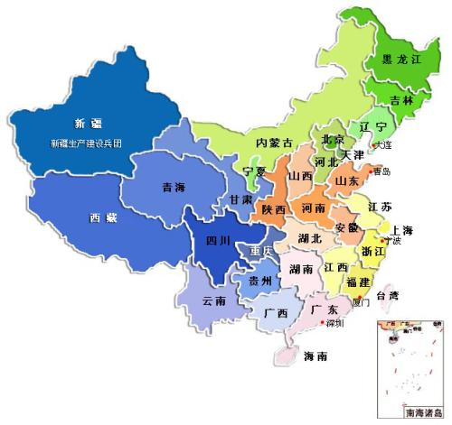
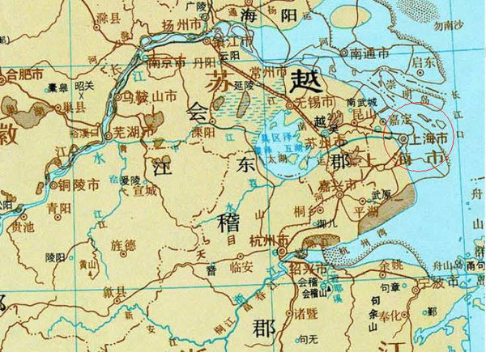
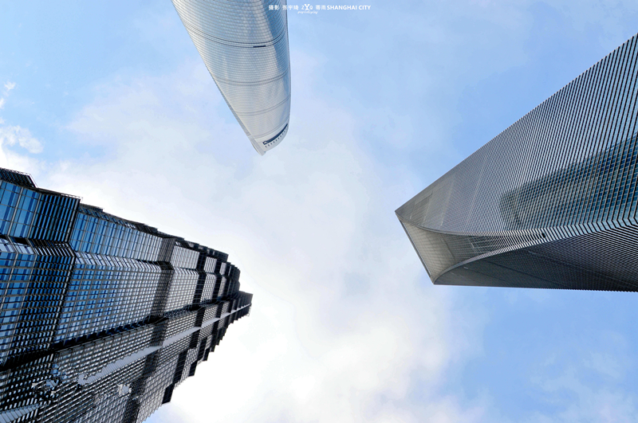

 上海，简称“沪”或“申”，是中国共产党的诞生地，中华人民共和国直辖市，国家中心城市，超大城市，沪杭甬大湾区核心城市，国际经济、金融、贸易、航运、科技创新中心，首批沿海开放城市。上海地处长江入海口，是长江经济带的龙头城市、G60科创走廊核心城市。隔东中国海与日本九州岛相望，南濒杭州湾，北、西与江苏、浙江两省相接。
 春秋战国时期，上海是楚国春申君黄歇的封邑，故别称申。四、五世纪晋朝时期，因渔民创造捕鱼工具“扈”，江流入海处称“渎”，因此松江下游一带称为“扈渎”，以后又改“沪”，故上海简称“沪”。 唐朝置华亭县。上海是国家历史文化名城，江浙吴越文化与西方传入的工业文化相融合形成上海特有的海派文化。 1843年后上海成为对外开放的商埠并迅速发展成为远东第一大城市。
 上海市总面积6340平方公里，辖16个市辖区，属亚热带湿润季风气候。上海GDP居中国城市第一位，亚洲城市第二位，仅次于日本东京。上海是全球著名的金融中心，全球人口规模和面积最大的都会区之一。上海被GaWC评为世界一线城市 。上海住户存款总额和人均住户存款均居全国第二 。2017年，上海高新技术企业总数达到7642家， 位列福布斯2017年“中国大陆最佳商业城市排行榜”第一位。 上海港集装箱吞吐量居世界第一，设有中国大陆首个自贸区中国（上海）自由贸易试验区。上海市与安徽、江苏、浙江共同构成了长江三角洲城市群，是世界六大城市群之一。